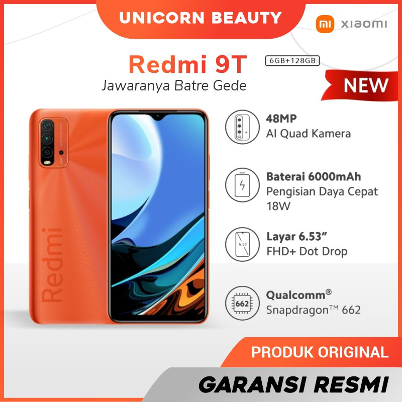

Redmi 9T
Xiaomi akhirnya resmi meluncurkan ponsel terbarunya, Redmi 9T, untuk pasar Indonesia. Ponsel yang mengusung slogan "Jawaranya Batre Gede" ini mengandalkan baterai berkapasitas 6.000 mAh dengan pengisian daya cepat 18 watt. Redmi 9T yang memiliki ketebalan 9,6mm dengan bobot 198 gram sebenarnya sudah lebih dulu diperkenalkan secara global pada Januari lalu.
Spesifikasi Redmi 9T di Indonesia tak banyak berbeda. Dibekali dengan baterai jumbo, Redmi 9T memiliki bobot 198 gram dengan ketebalan 9,6 mm. Layarnya menggunakan panel IPS LCD berbentang 6,53 inci dengan resolusi Full HD Plus. Di bagian atas terdapat poni kecil yang memuat kamera selfie 8 MP (f/2.0)
.Rangkaian kamera belakangnya berjumlah empat buah dan ditempatkan di modul berbentuk persegi panjang. Keempatnya terdiri dari kamera utama 48 MP (f/1.8), kamra makro 2 MP (f/2.4), kamera depth sensor 2 MP (f/2.4), dan kamera ultra wide 8 MP (f/2.2).
Untuk sektor dapur pacu, Redmi 9T ditenagai chip Qualcomm Snapdragon 662. Ada dua pilihan konfigurasi RAM dan memori internal yang ditawarkan, yakni 4 GB/ 64 GB dan 6 GB/ 128 GB. Tersedia juga dukungan kartu microSD hingga 512 GB. Fitur lain yang disematkan pada ponsel ini antara lain fingerprint side-mounted, NFC (opsional), Bluetooth 5.0, dual speaker, USB type-C 2.0, jack audio 3.5 mm,
sensor inframerah, dan Wi-Fi 802.11.